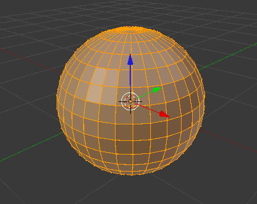

Modo Edición
Hemos llegado a un punto donde Blender multiplica exponencialmente su capacidad de creación. Todo lo que hemos venido haciendo para explicar la filosofía de trabajo del programa y familiarizarnos con su uso se ha hecho desde un modo de edición concreto que se denomina Modo Objeto. La prueba de lo que estamos diciendo se encuentra en el menú de Vista 3D en el campo con ese nombre. Pero si lo desplegamos vemos que hay un buen surtido de posibilidades más. De todas ellas ahora nos interesa pasar a Modo Edición  .
.
En Vista 3D el objeto seleccionado, en nuestro caso una esfera, cambia de apariencia.

¿Qué ha pasado? Sencillamente que hemos accedido a la geometría interna de la malla. Sabíamos que estaba formada por vértices, lados y caras pero nunca lo habíamos visto más allá del efecto facetado en Modo Objeto  .
.